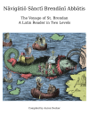
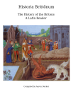
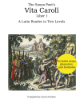

"What do I read after finishing an introductory Latin text like Familia Rōmāna? Virgil seems a little too hard..." This is the intermediate text problem: the available Latin texts seem to jump from introductory straight to difficult. My answer to this problem is a series of Latin readers, mainly featuring medieval histories.
Medieval histories tend to use simpler vocab and use a sentence structure more similar to modern romance languages than classical Latin. Their pacing is often brisk and the topics interesting. Medieval histories can also be used to teach history, helping to integrate Latin into the rest of the curriculum and justify allocating additional time to reading Latin.
However, there are some obstacles encountered with these texts. I created my readers to solve them.| Problem | Solution |
|---|---|
| It can be difficult to pick a book that's at ones level. Additionally, sometimes medieval writers use rare words, use words in a rare sense, or make up words. | A fully-parsed glossary is provided for each page, allowing for precise glosses. |
| Sometimes texts say very unexpected or surprising things, and thus it can be hard to tell if one's translation is correct. | Footnotes translations are provided for difficult or surprising passages. |
| Often these texts are out-of-print and scanned copies are hard-to-read, lack macrons, and engage in non-standard orthography. | These reader's editions have macronized, hand-checked text using classical spellings and standard orthography. |
| Title | Description | Word Count | Price |
|---|---|---|---|
|
Nāvigātiō Sānctī Brendānī Abbātis: The Voyage of St. Brendan: a Latin Reader in Two Levels
Amazon
 |
A medieval tale about an Irish monk who sails the Atlantic looking for the Promised Land of the Saints. | 4700 words simplified version 13000 words original version |
$20 |
|
Historia Brittōnum: The History of the Britons: A Latin Reader
Amazon
 |
The earliest extant history of Britain. Features Merlin, Vortigern, and Saint Germanus. | 9000 words original version | $15 |
|
The Saxon Poet's Vīta Carolī, Liber 1: A Latin Reader in Two Levels
Amazon
 |
A poetic rendition of Charlemagne's reign written in heroic verse by a Saxon poet in the 800s. | 1000 words simplified version, 2900 words original version | $10 |
| Total: | 5700 words simplified versions 24900 words original versions |
$45 |